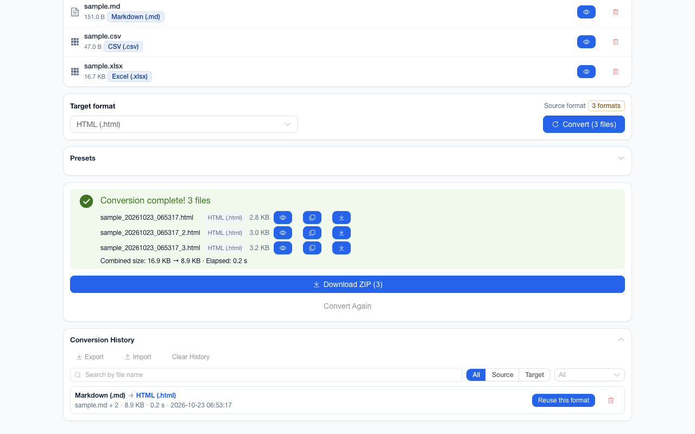

离线 · 无上传 · 浏览器本地完成Offline · no uploads · runs in the browser
JSON 转 PNG——离线、一份整页长图、不上传JSON to PNG offline — one tall image, no upload
要一张能贴进文档、截图工具又截不全的 JSON，这条路比截屏省事：`json>html` 先把解析后的值序列化成自带样式的查看器（每个字面量一行，对象与数组各是一个默认展开的 `<details>`，摘要写着 `Object(4)` / `Array(n)`，键、字符串、数字、布尔与 `null` 五类各自着色），`html>png` 再把净化后的文档离屏渲染成整页画布、无损编码成 PNG。两件事跟着走：**折行由排版而不是字符决定**——长字符串在页面宽度处断开，图里看到的是断开的样子；**颜色与层深是像素不是标记**——着色来自内联样式表，缩进来自 `margin-left`，所以它看起来像界面，而不像数据。上限是一条明确的失败而不是悄悄变短：单次整页捕获的高度上限是 32768 px（`MAX_CANVAS_EDGE × 4`），超出报「渲染高度过大」，因为浏览器在远超此高度时返回的是**空白画布**，那种「成功但全白」比一条错误难查得多。查看器不含任何指向网络的引用，所以这一路没有「图片取不到」可披露。输出参数在编码处按同一套边界再钳一次，最长边会重采样，而质量档只作用于有损编码——PNG 是无损的。全程在这个标签页里完成，只有 storage 权限。When the JSON is longer than any screenshot you can take, this route is shorter than one: `json>html` serialises the parsed value into a self-styled viewer (one line per literal, every object and array a `<details>` that opens by default with `Object(4)` / `Array(n)` in its summary, keys, strings, numbers, booleans and `null` each coloured), and `html>png` renders that sanitised document offscreen and encodes the whole page losslessly as PNG. Two things follow. **Wrapping is decided by layout, not by characters**: a long string breaks at the page width, so the picture shows the broken-up text. **Colour and depth are pixels, not markup**: the palette comes from an inline stylesheet and the indentation from `margin-left`, so it looks like an interface rather than like data. The ceiling is an explicit failure instead of a quiet shortening: one capture is bounded at 32768 px of height (`MAX_CANVAS_EDGE × 4`) and past it the route reports “too tall to render”, because a browser returns a **blank canvas** well beyond that, and a white “success” is far harder to diagnose than an error. The viewer carries no remote reference, so this route has no image it could fail to fetch. Output options are re-clamped against the same bounds at encode time and the longest edge resamples, while a quality setting means anything only to a lossy encoder — PNG is lossless. All of it inside this tab on the storage permission.

这条链路怎么走How the route runs
JSONJSON HTMLHTML PNGPNG
共 2 步，由扩展的路径搜索自动选出，中间产物不落盘。2 steps, chosen by the extension's own path search; intermediate results never touch the disk.
会保留什么What carries over
- 整页一次捕获：不必滚动截屏再拼接，一份长 JSON 就是一张图One capture for the whole page: no scrolling and no stitching — a long JSON becomes one image
- 无损编码：着色边界与细线不被二次量化，能放大到多清由内容高度选中的像素密度决定（2x / 1.5x / 1x）Lossless encoding: colour edges and thin rules carry no compression artefacts, and how far monospace glyphs survive a zoom depends on the density the page height selected
- 排版原样进图：折叠摘要、缩进与语法着色都是渲染出来的样子，与浏览器里看到的一致The layout goes into the picture as rendered: fold summaries, indentation and syntax colouring look as they do in the browser
- 没有远程引用也就没有静默丢失：查看器由本扩展自己写出，产物里不存在取不到的图片No remote references means nothing silently missing: the extension writes the viewer itself, so there is no image the artifact could fail to fetch
如实说明的限制What it does not do
- 高度上限 32768 px：超限直接失败并说明，不给被截短的图，也不给那片空白画布A 32768 px height ceiling: past it the route fails with an explanation rather than handing back a trimmed image (or that blank canvas)
- 文字在图里不是文字：PNG 是位图，产物里的键与值不能选中、搜索或复制Text inside the picture is not text: a PNG has no keys or values to select, search or copy
- 长字符串按页面宽度折行，所以看到的是折过的样子；要留原文请走 JSON→TXT 或就留在 `.json`Long strings wrap at the page width, so what you see is already broken up; take JSON to TXT or keep the `.json` for the original run
- 质量与目标体积是有损容器才有的档位：面板对 PNG 不提供它们，编码器也会忽略；这一路可调的只有最长边，超出会重采样Quality and a target file size belong to lossy containers: the panel does not offer either for PNG and the encoder ignores them, so the only dial that applies here is the longest edge, which resamples when exceeded
- 图片是给人看的快照，不承诺能再解析回 JSONThe image is a snapshot for people to read, with no promise that it parses back to JSON
实操提示Working with it
- 要能翻页的成品文档：JSON→PDF 走同一条渲染链，分页在那边For a paged document: JSON to PDF shares the rendering chain, with pagination on that side
- 要小体积的分享图：JSON→JPG 按 A4 分页逐页编码，长文件会出 ZIPFor smaller shareable pictures: JSON to JPG encodes A4 pages one by one, with long files arriving as a ZIP
- 要可复制、可搜索的文本：JSON→HTML 或 JSON→TXT，图片这一路只负责看起来像界面For copyable, searchable text: JSON to HTML or TXT — the image route only promises it looks like the interface
常见问题Questions people actually ask
为什么我的长 JSON 转出来是一张很高的图，而不是很多页？Why does one long JSON become one very tall image instead of pages?
因为 PNG 这一路是「整页捕获」：净化后的文档一次性渲染成一张画布，高度由内容决定，只有 32768 px 的上限。分页是 PDF 那条路的形状（JSON→PDF 与 JSON→JPG 都经它），两边刻意不同——一张长图适合贴进聊天，分页适合打印。Because the PNG route is a whole-page capture: the sanitised document becomes one canvas whose height follows the content, bounded at 32768 px. Paging is the shape of the PDF route (JSON to PDF and JSON to JPG both go through it), and the difference is deliberate — a tall image pastes into a chat, pages print.
转出来的图能复制文字吗？Can text be copied out of the picture?
不能。本扩展没有「从图里读回文字」那一步，PNG 产物也没有文字层，只有像素。要能选中与搜索的结果，请走 HTML、TXT 或 Markdown——它们用的正是这条链的前两步。No. There is no step here that reads words back out of an image, and the PNG carries no text layer, only pixels. For something selectable and searchable take HTML, TXT or Markdown, which use the first two steps of this very chain.
很大很大的 JSON 会不会被悄悄截掉？Does a very large JSON get quietly trimmed?
不会，两处都朝「如实说」设计：查看器序列化有行数与长度预算，触顶时界面会写明实际读了多少；整页高度超过 32768 px 时报错，而不是交付空白画布或被截短的图。No. Both ends are built to say what happened: the viewer works under line and length budgets and the interface states how much it actually read when one is hit, and past 32768 px of page height the route fails instead of delivering a blank canvas or a trimmed image.
不需要账号，也不需要联网：装好扩展后点图标，在新标签页里打开工作台，文件从磁盘直接选。No account and no network: install the extension, click its icon, and the workbench opens in a new tab reading straight off your disk.
从 Chrome 应用商店安装Install from the Chrome Web Store 安装步骤Install steps GitHub 源码Source on GitHub